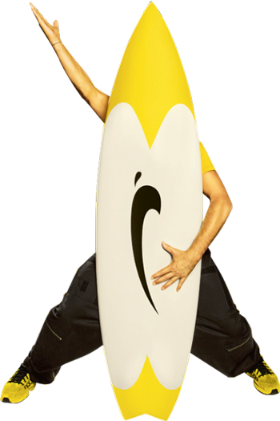
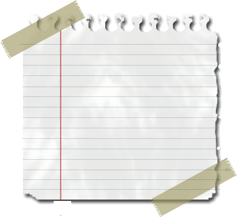
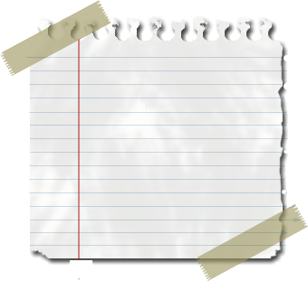

TU VEUX SAVOIR QUI SE CASSE DERRIERE CETTE PLANCHE ?

 

Salut, Ça Farte? J’te fascine hein ? Allez viens on parle de moi !
Moi c’est BRICE, J’SUIS SURFEUR WINNER ASCENDANT SNOWBOARDER, J’SUIS LE ROI D’LA GLISSE, PAS BESOIN D’NOTICE.
Fin si du coup toi t’aurais bien besoin d’une notice pour me ressembler vu ton style,
JT’AI CASSÉ
Moi tous les matins je casse le vent, j’fais chier les gens, ça m’purifie, c’est important.
Ce que je porte autour du cou ? C’est un grigri qu’un sorcier hawaïen m’a donné, c’est une vraie fausse dent de requin faite en résine, t’es jaloux ?
Rejoins moi a ma “Yellow” au cinéma le 6 avril 2005 !